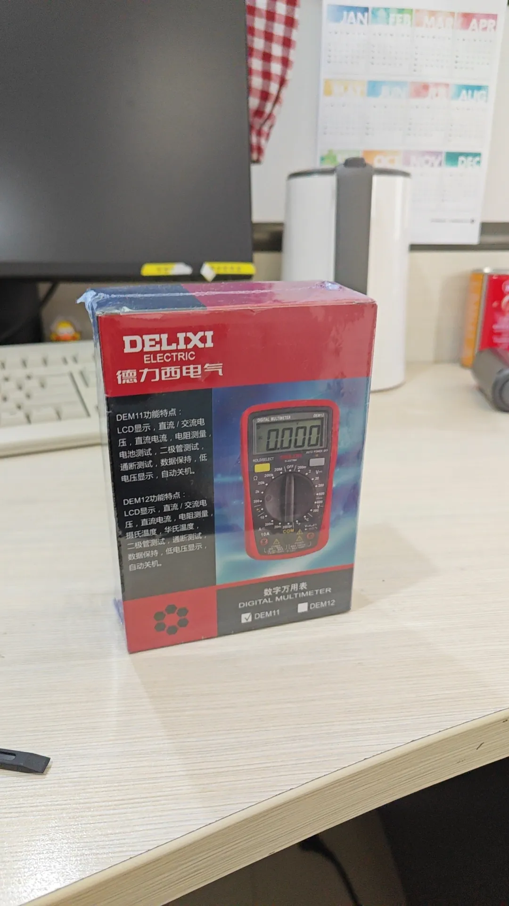
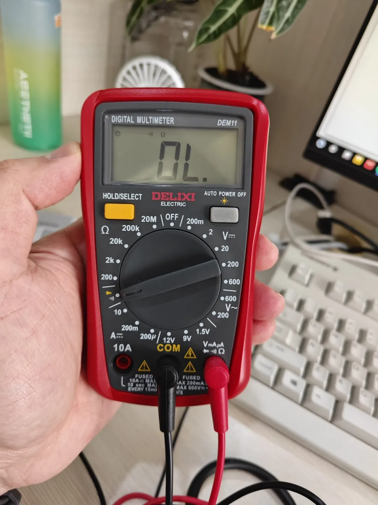
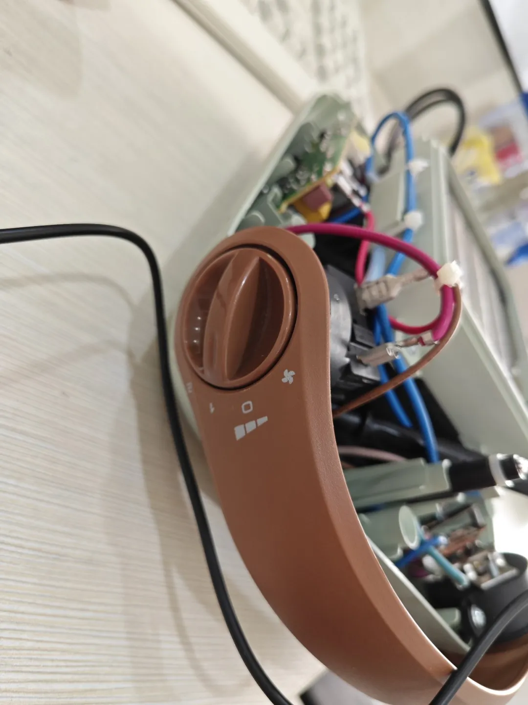
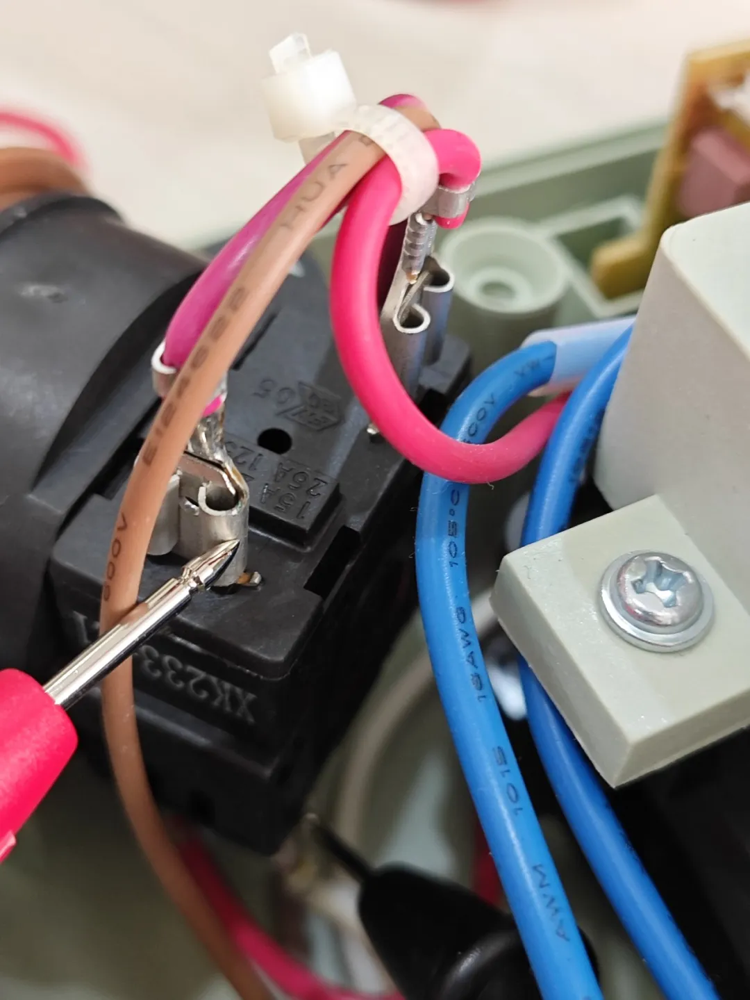
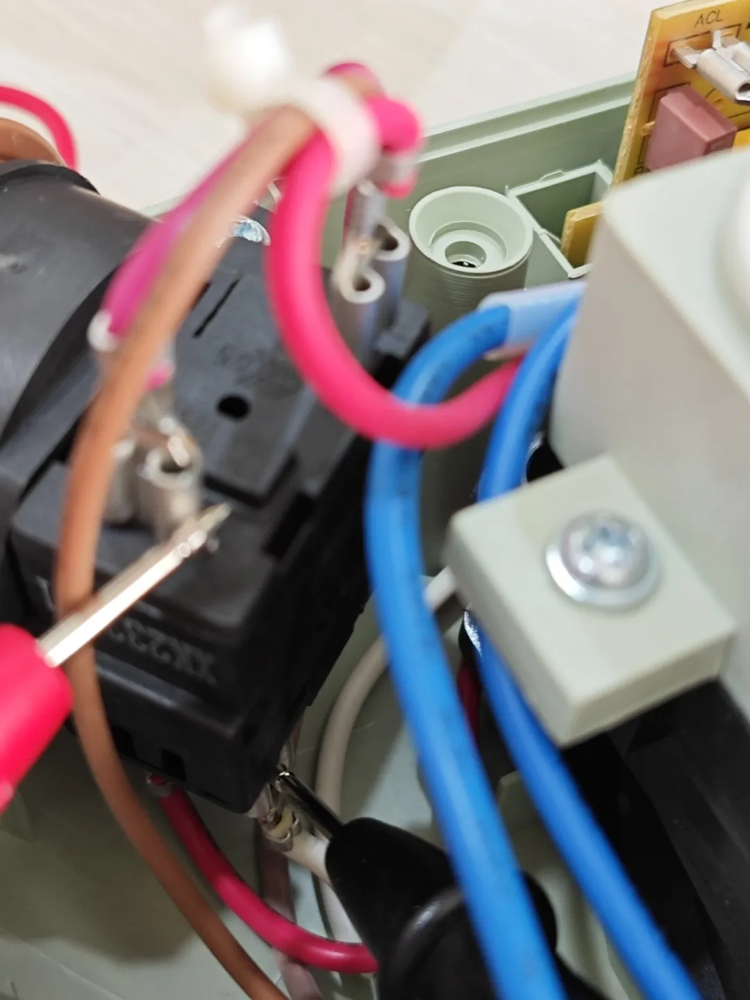
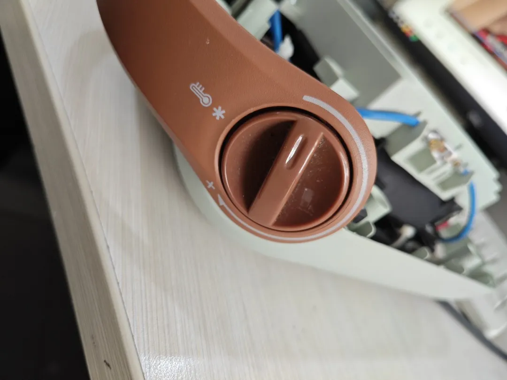
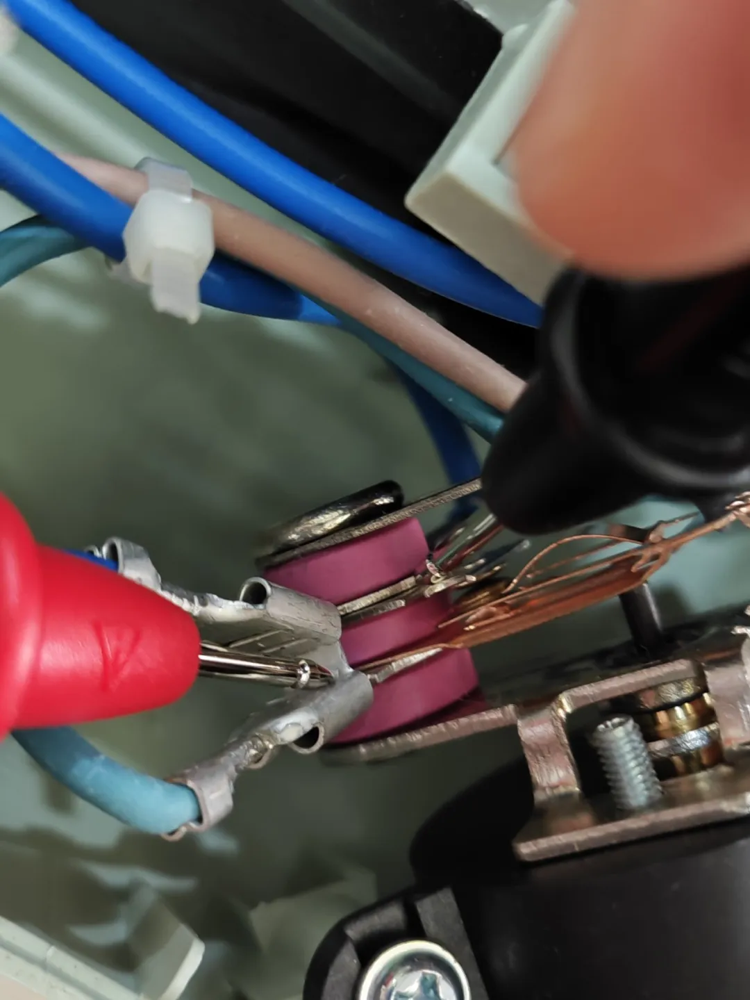
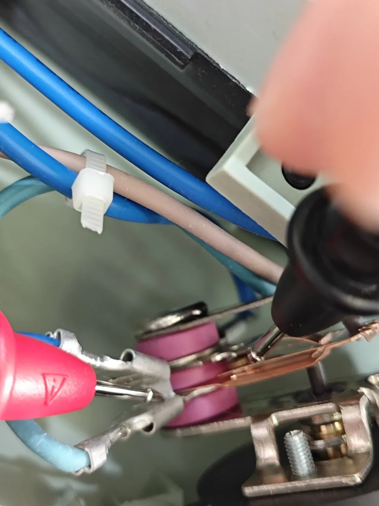
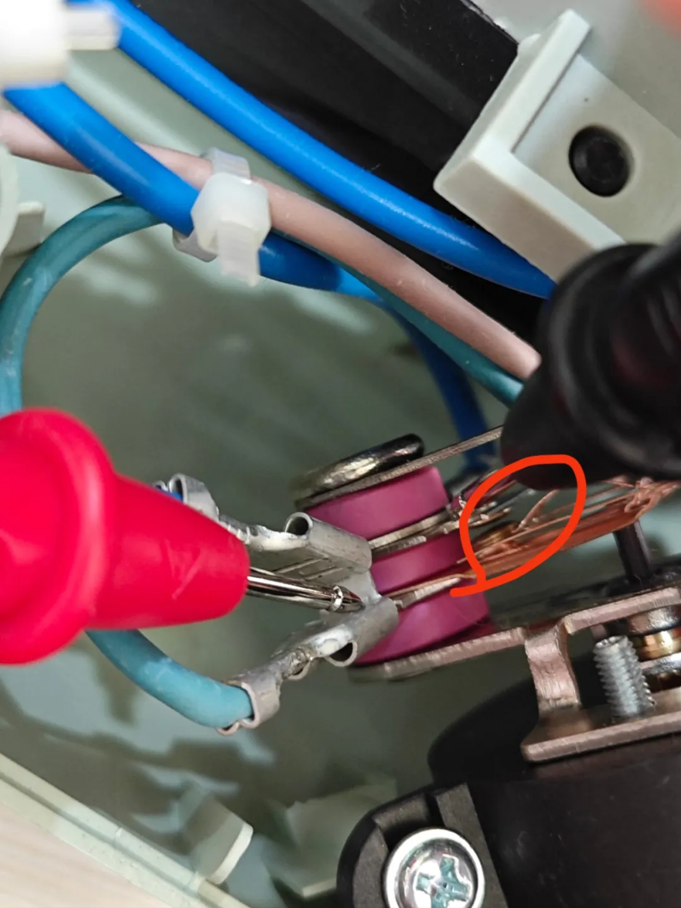

维修暖风机
此次维修使用的是德力西的DEM11数字万用表，京东、淘宝都是46块8：

出现的问题就是：暖风机通电后，打开风速档位、打开温度调节档位，灯亮，但是没有热风吹出，就是说，同时没有风、和热，这两个问题。
首先，根据说明书的要求，将线路插入对应的孔洞：目标是测通路是否发生断路。然后，按压黄色按钮，将hold模式调节到通断测试的模式，直至屏幕出现“无线信号”图案：

本次维修参考了哔站UP主：阿兵电器维修 的视频。根据“阿兵电器维修”的经验分享，我们先从电源线的火线入端开始，一个一个节点排查。火线进入的第一个模块是风力调节开关，那我们打开风力开关（所有工作都在断电情况下进行），参见下图，开始测风力开关模块：

在风力调节模块的：进、出，这两个节点测试通断情况。测试结果：万用表发出蜂鸣声，说明电路短路，为通。我们可以排除这个节点的问题：


我们继续沿着火线的前进方向，排查第二个模块，第二个模块是小灯泡。根据一开始我们说的，小灯泡会亮，所以排除小灯泡烧坏了导致断路的问题，于是排除第二个节点。
接下来，我们跟着火线，走到了第三个模块，就是温度调节器：

打开温度调节开关，开始测试：

温度调节器打开情况下，我测试了下图这两个点位，发现万用表没有发生蜂鸣声，说明两点间发生断路，我继续进行排查：

我测了下图这两个节点，万用表发出蜂鸣声，于是，问题定位到了接触点。根据“阿兵电器维修”的分享，我也怀疑是接触点污染导致断路，于是我用了餐巾纸擦拭了一下：

就是上图这个点位。擦拭完，我们将暖风机插电测试，测试结果参考下面的视频：